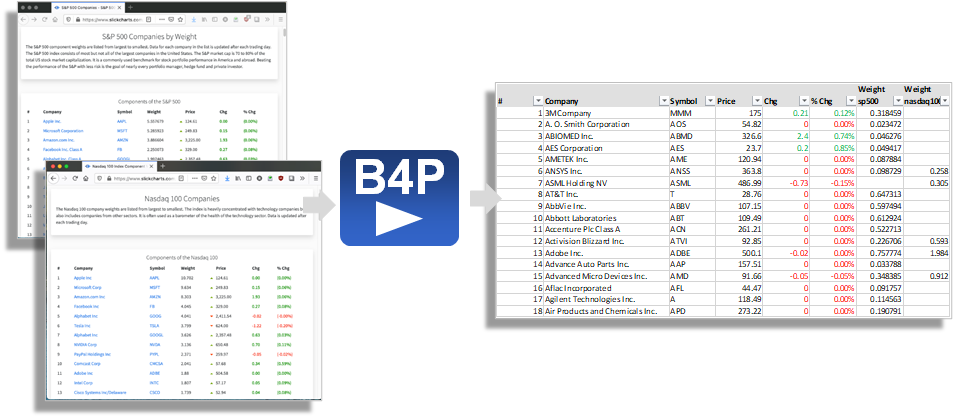

Obtain S&P 500 and NASDAQ 100 listings
The following program example demonstrates downloading some stock market data from a web page and combine
both listings in one Excel files. Negative values will appear in red.

Information source: slickcharts.com NASDAQ 100 and
slickcharts.com SP500
The Full Program
include ( Style Library ); // Include this library if you want to use the 'table style ...' functions.
// Step 1: Download two web pages.
for all parameters ( {nasdaq100, sp500} , listing[] )
{
file download overwrite ( "https://www.slickcharts.com/" + listing[], listing[] + .html);
table load ( listing[],listing[] + .html, HTML, "Components" );
table clean ( listing[], trim spaces );
table process ( listing[], ['% Chg'] = smart num( middle( ['% Chg'], '(', ')' )); [Price] = clean num([Price]) );
table correct headers ( listing[], "Portfolio%", Weight ); // SP500 uses different terminology
table rename column headers ( listing[], Weight, "Weight " + listing[] ); // Weight info is specific to SP and Nasdaq, so add the listing name
}
// Step 2: Combine the two tables
table merge extend columns ( nasdaq100, sp500, Symbol );
table rename ( sp500, stocks );
// Step 3: Rearrange
table sort rows ( stocks, Company );
table process ( stocks, ['#'] = row() ); // Number the items
table rearrange columns ( stocks, { '#', Company, Symbol, Price, Chg, '% Chg' } ); // Weightings follow afterwards
// Step 4: Add Style
table style auto width ( stocks );
table style theme ( stocks, Zebra Vertical Lines, pattern, 2, table, "gridlines, false" );
table process ( stocks, // Negative numbers: red; positive numbers: navy blue
table style cells ( stocks, { 'Chg', '% Chg' }, { 2: row() }, single, text color, select if ( [Chg]>0, navy, red ) ) );
table style columns ( stocks, '% Chg', sheet, number format, "0.00%" ); // Value to show as percent.
table style table ( stocks, sheet, freeze rows, 1, autofilter, 0);
// Step 5: Save the artwork
table save excel file ( stocks, "NASDAQ and SP500", Stocks.xlsx );
// Step 6: Also demonstrate saving results in HTML
table format numbers ( stocks, '% Chg', "0.00%" ); // For HTML, the number must be physically reformulated with %-sign
translate style attributes for html (stocks);
table save ( stocks, "Images\Stock Market Listing.html", HTML );
The Output
Row #: Code Text _______________________________________________________
1: include ( Support Library );
2: include ( Utility Library );
3: include ( Office Library );
4: include ( Style Library ); // Include this library if you want to use the 'table style ...' functions.
5: // Step 1: Download two web pages.
6: for all parameters ( {nasdaq100, sp500} , listing[] )
7: {
8: file download overwrite ( "https://www.slickcharts.com/" + listing[], listing[] + .html);
9: table load ( listing[],listing[] + .html, HTML, "Components" );
^
Calling: table load (nasdaq100,nasdaq100.html,HTML,Components)
HTML file, row 222: Expected a number after 'rowspan' / 'colspan' attribute
Syntax error in HTML-coded file being loaded.
Code execution will stop. Going to interactive mode
-------------------------------------------------------------------------------
Type 'help' for help, 'docs' or 'toc' for online B4P documentation.
>> View the generated HTML file with the formatting included:
Test Click on the file name open the file with Excel (.xlsx) :
Stock Market Listing.xlsx, and
Stock Market Listing.html.